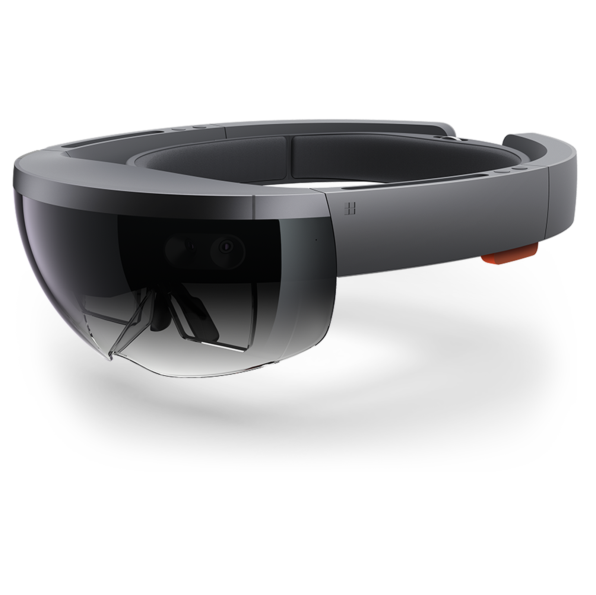

Exploring design opportunities for HoloLens in assisting the creative and collaborative process of filmmaking.
I worked with a design research team partnered with Microsoft HoloLens to investigate potential applications of Mixed Reality in the realm of filmmaking.
Created in partnership with

Role
Design research
Project management
Content strategy
Duration
5 months
Teammates
Dolcie Dass
Surabhi Wadhwa
Saransh Solanki
Client
Microsoft HoloLens
Advisors
Ron Amador-Leon
Dan Osborn
Vibhuti Kanitkar
Christian Sadak
Daniela Rosner
Michael P. Smith
Executive summary
The invention of new media technologies has had a huge effect on the entertainment industry. We went into this with a particular interest on how major studios plan and organize their activities on production. We wanted to investigate specific opportunities that leverage mixed reality and in particular HoloLens as a design intervention. We dove into the 5-month research phase by conducting competitive analysis, literature review, and recruiting experts that have worked on major motion pictures.
Through synthesis of the ethnographic data collected, we generated a number of research insights. From these insights and core product qualities from competitive analysis, we generated three major themes for research findings. We believe the product should help film-makers with:
Understanding spatial constraints
Visualizing virtual objects
Addressing business needs
The research report found below is the culmination of 10 weeks of research work done on the project. We presented the physical report to the Mixed Reality at Work (MRW) team at Microsoft. The findings in the report was used by the design and prototyping team to flesh out a functional prototype to demonstrate how mixed reality could be used to assist the filmmaking process. The outcome of the design and prototyping phase could be found on Surabhi Wadhwa's portfolio here.
Through the 10 week research we identified three concrete areas of opportunity that would be ripe for a mixed reality design intervention.
Miniature 3D set
People see the world in 3D. Current pre-visualization tools used on computers and phones only depict a 2D version of this 3D world. We see a huge opportunity in the form of a holographic tabletop miniature 3D model of the set that could be used in pre-production. We envision a Hololens application that would provide the director with a birds-eye view of the production setup in order to plan the movement, scale, and positioning of characters, objects within a scene.
Spatial location mapping
While location scouting, production designers and location managers can scan a space using the Hololens or capture 360 video and photos of the location and from this render a 3D model of the indoor or outdoor space. This built to scale 3D model serves as a communication for the film crew by showcasing the spatial limitations of the set, leading to better alignment, planning, and organization during production.
Visualizing CGI
Another promising opportunity we identified is helping actors and the camera crew visualize computer generated characters and objects that would be added in post-production. Actors could wear the Hololens to rehearse with a CGI hologram and match eye-lines before shooting a scene. This application of the Hololens could also be used by the camera crew to pull focus on a CGI character or object and reduce the number of plate shots captured.
Research Objective
Investigate ways to assist filmmakers to externalize creative ideas and collaborate with stakeholders using mixed reality as a design intervention.
Based on formative research from experts and secondary research, we found that filmmakers use various methods to visualize and externalize their ideas, shots, and sequences. We also identified gaps in collaboration that exists between different stakeholders in the entire filmmaking process. We wanted to focus our attention on the externalization of creative ideas, and investigate pain points that exist within collaboration.
My contribution
I acted as a design researcher on this team. I was responsible for outlining the recruitment strategy for the participant pool, responsible for creating the study guide for the participants and experts we spoke with, and recruiting the participants and experts for the ethnographic interviews.
I played an instrumental role in synthesizing the data. In addition, I was responsible for writing the majority of the content in the research report.
Background
Technology has impacted the filmmaking industry in the past few years. From George Lucas to Robert Rodriguez, technology has been adopted to drive the industry in very different directions.
Recently, there has been a huge interest from filmmakers in immersive technologies. Steven Spielberg used the HoloLens while building the VR cinematic universe of Ready Player One, and James Clyne the director of photography used a VR headset to assist him in filming Solo.
We were really intrigued by the prospect of VR/MR being used as a filmmaking tool. So we dove into formitive research and found this tweet by the Virtual Production Supervisor on Ready Player One.
Just to clarify, we used @oculus Rift, @htcvive, and @HoloLens during the filming of #ReadyPlayerOne, not just one headset. Each one was used at a different stage of production.
When shooting mocap, Rift. When scouting virtual cameras, Vive. When on the practical set, Hololens https://t.co/62Ikvwd0d7
We jumped into this by first understanding the film production process. What we learned is that filmmaking consists of five stages, but the majority of technology advancements have been focused around post-production transcendence.
We saw this as a potential opportunity to focus on improving the pre-production and production phase of filmmaking using mixed reality. Therefore we set out to speak with experts and participants that hold ownership over the pre-production and production phases of filmmaking - namely directors, producers, cinematographers, and VFX artists.
Research participants
Diversification of participants is key for our project. We looked for triangulation across different stakeholders. Pain points identified by multiple participants helped us narrow down areas where MR could be most effective as a design intervention.
We identified that it is important to speak to participants that work on the production of major motion picture films, as well as independent filmmakers such as art and documentary filmmakers.
4
Directors
2
Cinematographers
3
VFX artists
2
MR experts
1
Film professor
3
Film students
We got the opportunity to really flesh out our pool of knowledge by speaking with a number of industry experts. We spoke with:
Thomas Furness
Thomas Furness is a professor at the University of Washington (UW) in the Department of Industrial & Systems Engineering where he teaches Virtual Interface Technology. He has been a pioneer of augmented reality technologies for over 50 years. He has collaborated with Peter Jackson (Director, Lord of the Rings) on the LOTR franchise and partnered with Douglas Trumbull (VFX, 2001: A Space Odyssey) on some VR related projects.
Sura Kalyan
Sura is a trained VFX artist, director, and writer currently working in Los Angeles. He also worked as a Technical Director (TD) at DreamWorks Animation, and a VFX artist for Detective Pikachu, The Hedgehog, and MIB International.
Ryan Woodward
Ryan has been in the film and animation industry under various roles such as animator, storyboard artist, concept artist, writing and directing for 23 years.
As a storyboard artist, he worked on Spider-Man 2 and 3, Cowboys and Aliens, Where the Wild Things Are, Iron Man 2, Snow White and the Huntsman, Thor 2, Captain America 2 and The Avengers.
Kevin Philbin
Kevin Philbin is an independent film producer, and director of photography. Kevin has 9 years of experience running his own film production studio, Kevmo Productions. His work focuses on the production of cinematic shots at international locations. His list of clients include Flor De Caña Rum, The Nature Conservancy, Bike MS, Diamondback Bicycles, and many others.
Insights learned
By cross-referencing the information gathered from primary and secondary research, we generated a total of nine different insights. From these nine insights, distinct patterns emerged. We decided the best way to contextualize the insights would be to group them under three distinct themes.
Understanding Space
The production crew relies on written documents or 2D artifacts for blocking a scene in 3D, which leads to gaps when communicating spatial information.
Blocking diagram for illustrating movement of actors, cameras, and objects.
It’s hard to verbally explain the geometrics, where’s everyone positioned. Just explaining the ideas to the DP takes a lot of time and effort.
— Brandon Crane, Indie director
Set designers and decorators require access to filming locations in order to transform the set before the shoot. Reserving the location for long periods of time increases production costs.
Alcazar of Seville in Spain as Dorne in Game of Thrones
My team once transformed a large downtown church into a police station, a prison warden’s office, and prison hallways; a basement, an upscale office, a Brazilian kitchen, and a small Brazilian church.
— Tut Thomas, Director/Author
Production designers rely on physical 3D models for designing studio sets as photos and concept art do not provide spatial context.
The Burrow from Harry Potter
The analog style of having a physical model that everyone can look at, around the table is immensely helpful.
— Scott Baker, Set designer on Black Panther
Lower fidelity of computer-generated characters and objects allows for faster experimentation of its location, scale, and movement.
Game of Thrones pre-vis
Previs is the ideation phase, nothing is solid. It’s a scratch pad for the ideas between the Director and his team.
— Sura Kalyan, VFX artist on Detective Pikachu
Visualizing Virtual Objects
During pre-production, directors face difficulty experimenting with the movement, scale, and position of characters using current 2D pre-visualization tools.
Previs today is done using tools like Maya, Unity, and UnReal which are still 2D environments mapping 3D content. This makes it difficult for the directors to visualize the positioning, scale, and movement of characters. It doesn’t accurately represent the artistic spatial vision. Moreover, this tools have a steep learning curve which makes it often impossible for directors to play around with.
While shooting on set, actors and camera crew cannot envision computer-generated characters and objects.
King's Landing in Game of Thrones
They’re like ‘look out to the castle’ and you just think ‘well, how far away is it? Is it right here?’ and although you can ask all of those questions it never looks right.
— Maisie Williams on Game of Thrones
Business Viability
For major productions, financial success takes precedence over creative freedom due to time and budget constraints.
In today’s world, the films produced tend to have a stronger push towards commercial success. As the production cost of movies has progressed exponentially in the past decade, the complete process of filmmaking leaves very little room for error. Contingencies during production can be devastating. Hence, time and budgets are paramount, which leaves limited room for experimentation of techniques and tools. Moreover, the value of new tools and technologies need to be self-apparent.
Achieving your exact vision without enormous budgets is very difficult. Higher budget films are strangled by producers and execs.
— Kwame Braun, film professor and documentary maker
Big budget productions are innovating and adopting new media technology. However, small production studios display a cautious attitude towards adopting these technologies due to the lack of resources, knowledge, and best practices.
There is a noticeable inequality across the scale of production studios and their adoption of new media technologies. Access to time, knowledge, resources, and room for experimentation with this tech is directly correlated to the size of the budget. The use of this tech in filmmaking is not a standardized process across the industry. The precedence has been set by Steven Spielberg, James Cameron, and other few directors in Hollywood. But the knowledge of these tools is limited to these few production houses. This lack of understanding of how new media technology functions and its benefits is not apparent to smaller production houses, leading to less adoption.
The VFX industry is catered towards industry studios, not indie filmmakers and smaller studios. [...] most indie directors aren’t really aware of what technology can do for them.
— Sura Kalyan, VFX artist on Detective Pikachu
Connecting back to MRW at Microsoft
As discussed earlier in the case study, we identified three major areas of opportunity that could apply HoloLens as a potential design intervention. HoloLens's mixed reality technology could be used for the following applications.
Build miniature 3D sets
Layout | Microsoft Dynamics 365
People see the world in 3D. Current pre-visualization tools used on computers and phones only depict a 2D version of this 3D world. We envision a Hololens application that would leverage the functionalities of Layout and allow directors to build a production setup so it's easier for them to plan the movement, scale, and positioning of objects, cameras, and characters.
Spatial location mapping
Guides & Remote Assist | Microsoft Dynamics 365
Another promising opportunity we identified is helping actors and the camera crew visualize the position of movement of CGI. Actors could wear the Hololens to rehearse with a CGI hologram and match eye-lines before shooting a scene. Guides and Remote Assist could be used by the director to immediately upload and iterate instructions for the actors.
Visualize CGI
Spatial mapping | Microsoft Docs
While location scouting, production designers and location managers can scan a space using the spatial mapping functionality of the HoloLens to capture 360 deg videos and photos of the location and from this render a 3D model of the indoor or outdoor space.